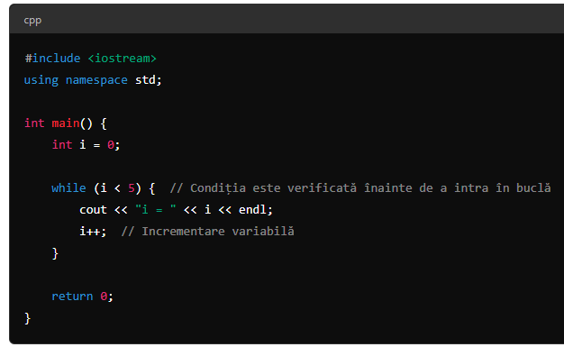
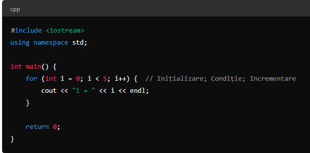

-
Lectia 1:Hai sa vorbim mai intai despre variabile!Deci fii atent,avem mai multe tipuri de variabile dintre care sunt:
- int ( una dintre cele mai importante tipuri de date ) int - vine de la integer
reprezinta un nr intreg
ex :7 ,ronaldo siuuu - float ( la fel,una dintre cele mai importante tipuri de date ) float - vine de la floating number
reprezinta un nr zecimal
ex:0.233 - double ( nuprea o sa l folosesti ) dobule - vine de la double number
reprezinta un nr zecimal mai mare decat float,cu o precizie mai buna
ex:0.233231311313 - long ( nuprea o sa l folosesti ) long - vine de la long number
reprezinta un nr intreg mai mare decat int,cu o precizie mai buna
ex:7777777771000000000 - char( nuprea o sa l folosesti ) char- vine de la character
reprezinta un caracter/simbol
ex: a = "A"
-
Lectia 2:Hai sa vorbim aici despre operatori artimetici!
- + ( aduna )
- - ( scade )
- * ( inmulteste )
- / ( imparte fara rest
Ex:12/10=1.2 ) - % ( imparte cu rest,iti da restul
Ex:12%10=2 )
-
Lectia 3:Hai sa vorbim aici despre cum facem ca sa introducem data de la tastatura/sa apara pe ecran!
- cin ( comanda cu care introducem date
Ex:cin>>a; ) - cout ( comanda cu care face se afiseaza pe ecran
Ex:cout<<a; )
-
Lectia 4:Hai sa vorbim aici despre cum atribuim valoare unui variabile!
- = ( numit si operator de atribuire
a=b; )
-
Lectia 5:Hai sa vorbim aici despre if/else /else if
- if - inseamna daca
- else - inseamna altfel
- else if - inseamna altfel daca
Syntaxa la if(syntaxa inseamna reguli)
if(conditie)
{instructiune1}
Syntaxa la else(syntaxa inseamna reguli)
if(conditie)
{instructiune1}
else
{instructiuni2}
Syntaxa la else if(syntaxa inseamna reguli)
if(conditie)
{instructiune1}
else if
{instructiuni2}
else
{instructiuni3}
!Nota else if nu trebe sa fie ultimul,mereu dupa if,niciodata la final
!Nota Se mai numesc si structuri decizionale,deoarece iau decizii dupa conditii
-
Lectia 6:Continuam de la lectia 5,operatori conditionali
- == - inseamna egal
- && - inseamna si
- || - inseamna sau
- != - inseamna nu este egal
- > - inseamna mai mare
- < - inseamna mai mic
- >= - inseamna mai mare sau egal
- <= inseamna mai mic sau egal
Acestia 4 trebe invatati neaparat
-
Lectia 7:Scurtaturi( Incremenatre,Decrementare )
- Avem 2 scurtaturi importante(++,--) ++ - adauga o unitate
Ex:Sa zicem ca i = 1,daca scriu i++,i va fi egal cu 2;
-- - scade o unitate
Ex:Sa zicem ca i = 1,daca scriu i--,i va fi egal cu 0;
-
Lectia 8:Bucle,zis si loopuri(for loop, while loop, do while )
- While loop - o bucla ce se desfasoara pana la un nr necunoscut de instructiuni
- For loop - o bucla ce se desfasoara pana la un nr cunoscut de instructiuni
- Do while - o bucla ce se desfasoara pana se indeplineste conditia finala
Syntaxa pt while:

Syntaxa pt for:

Syntaxa pt do while:

-
Lectia 9:Switch Statements
- Asta e syntaxa:switch(expression)
{ case x:
break;
case y: break;
default: }